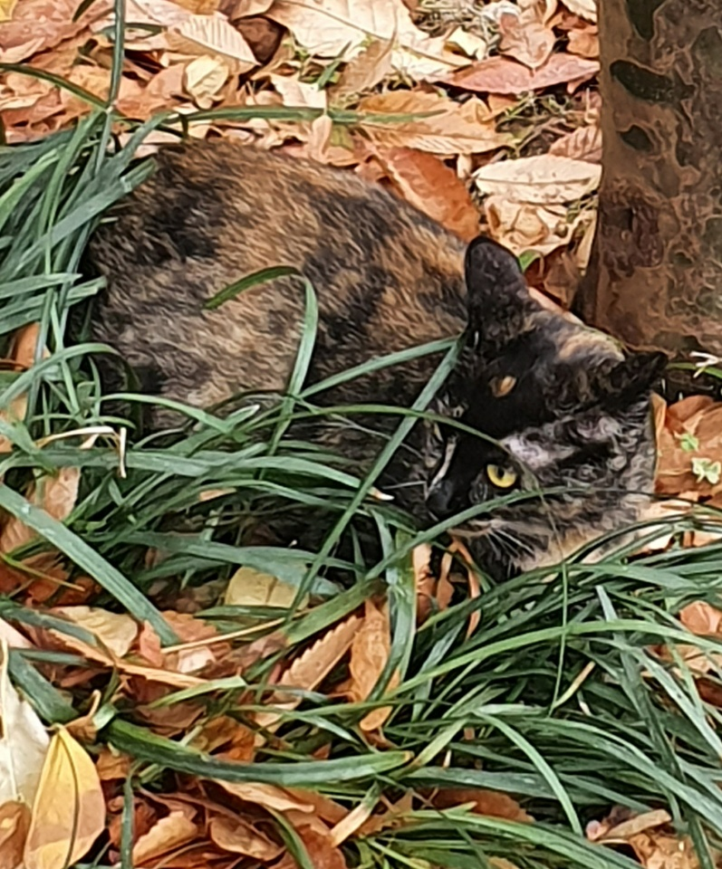

매시와 마찬가지로 출생연월일이 불명한 길냥이. 잠실 삼전동에있는 놀이터냥 중 한놈이다. 종은 역시 코리안 숏헤어. 잿빛 바탕털에 주황색, 흰색털이 얼룩덜룩 섞인 카오스냥. 위장을 아주잘함 .

songsongsong이 물을 주는 놀이터냥 2. 사진에서와 같이 숨어있는바람에 매시를 찍다가 우연히 발견. 노란색 눈동자를 가지고있으며, 처음 발견당시 찍힌 사진을 보면 이마에 노란 나뭇잎이 눈처럼보여 눈이 3개인 줄 알았다고해서 삼눈이가 되었다. 아직까지는 단 한번도 보지 못함. 초딩 놈이 밥먹는 삼눈이를 잡으려고 뛰어가는 것을 피하려고 놀이터 밖으로 도망갔다고했다.삼눈이는 송인재픽 주식캔을 먹지 않음.